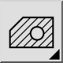
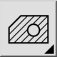

Hatch från urvalet…
Verktygsfält / ikon:


Meny: Rita > Lucka > Hatch från urvalet…
Genväg: H, A
Kommandon: hatch | ha
Detta är en automatisk översättning.
Verktygsfält / ikon:


Meny: Rita > Lucka > Hatch från urvalet…
Genväg: H, A
Kommandon: hatch | ha
Det här verktyget fyller ett område som omges av befintliga enheter med ett skraffermönster eller en enfärgad färg.